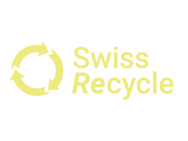
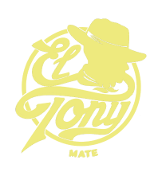
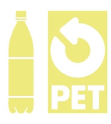

Hey Freunde! Willkommen bei binBuddy!
BinBuddy will dafür sorgen, dass sich das Recyceln an einem unbekannten Ort mühelos gestaltet. Es ist nicht immer einfach, verantwortungsvoll mit der Umwelt umzugehen, besonders im Urlaub, wenn man sich eigentlich entspannen möchte. Durch unsere innovativen Tools wird das Recycling von einer trockenen Tätigkeit zum Kinderspiel. Spielerisch gestaltet und einfache Handhabung sind nur einige unserer Grundsätze. Wir hoffen, dass auch du Teil unserer internationalen Community wirst und wir gemeinsam die Zukunft unseres Planeten mitgestalten können.
“What humans do over the next 50 years will determine the fate of all life on the planet.”
- David Attenborough
Der Rekord für das heisseste gemessene Jahr wurde in den letzten zehn Jahren neun mal gebrochen.
- Statista
Jede dritte Hai-Art ist vom Aussterben bedroht.
- WWF
Die Abbauzeit von Plastik wird auf mindestens 450 Jahre geschätzt.
- National Geographic
Im letzten Jahr ist so viel Wald abgebrannt wie die Fläche Belgiens.
- crisis-prevention.de
Partnerschaften
BinBuddy setzt auf hilfsbereite Partner:innen. Dazu gehören Vereine und Organisationen wie Swiss Recycle oder PET-Recycling Schweiz. Auch Produzent:innen wie El-Tony oder Sparana sind wir dankbar. Sie übernehmen Verantwortung für den Abfall, der durch ihre Produkte entsteht. Diese Partnergemeinschaft nutzen wir, um unsere Seite weiter zu verbreiten und das mühelose Recycling allen zugänglich zu machen.
  Kund:innenrezensionen
Dank binBuddy konnte ich während meinem Wanderurlaub in Albanien entspannt recyclen.
- Simone
Die Idee ist super und es funktioniert meistens auch ganz gut, allerdings fehlt mir ein bisschen der Anreiz, auch selber aktiv mitzumachen.
- Harald
gibts schon!
- Marcel